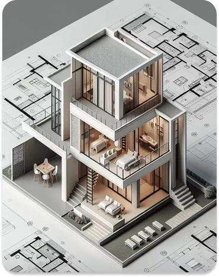

<ion-content [fullscreen]="true" scrollY="false">
  <div class="main-wrapper">
    <div class="custom-toolbar">
      <div class="left-icons">
        <ion-button fill="clear" (click)="goBack()">
          <ion-icon name="arrow-back-outline"></ion-icon>
        </ion-button>
        <ion-button fill="clear">
          <ion-icon name="arrow-undo-outline"></ion-icon>
        </ion-button>
        <ion-button fill="clear">
          <ion-icon name="refresh-outline"></ion-icon>
        </ion-button>
      </div>
      <div class="right-icons">
        <ion-button fill="clear">
          <ion-icon name="save-outline"></ion-icon>
        </ion-button>
      </div>
    </div>

    <div class="image-viewport">
      
    </div>

    <div class="action-panel">
      <div class="toggle-row">
        <button class="btn-toggle active">AUTO GENERATE</button>
        <button class="btn-toggle disabled">MANUAL ADJUST</button>
      </div>

      <button class="btn-wide secondary">GENERATE DESIGN</button>

      <div class="final-row">
        <button class="btn-half primary" (click)="goToHome()">ACCEPT</button>
        <button class="btn-half secondary">RETRY</button>
      </div>

      <div class="footer-icon">
        <ion-icon name="grid-outline"></ion-icon>
      </div>
    </div>
  </div>
</ion-content>
